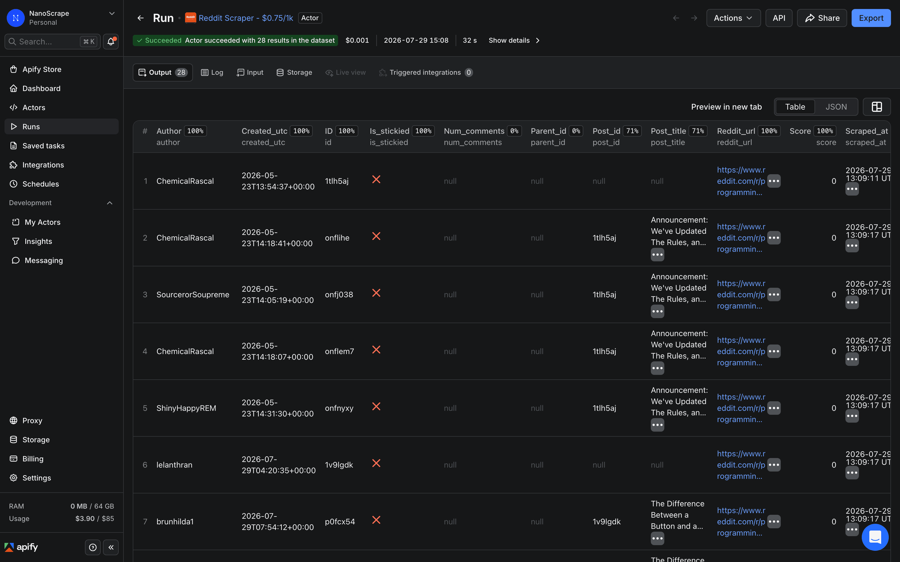
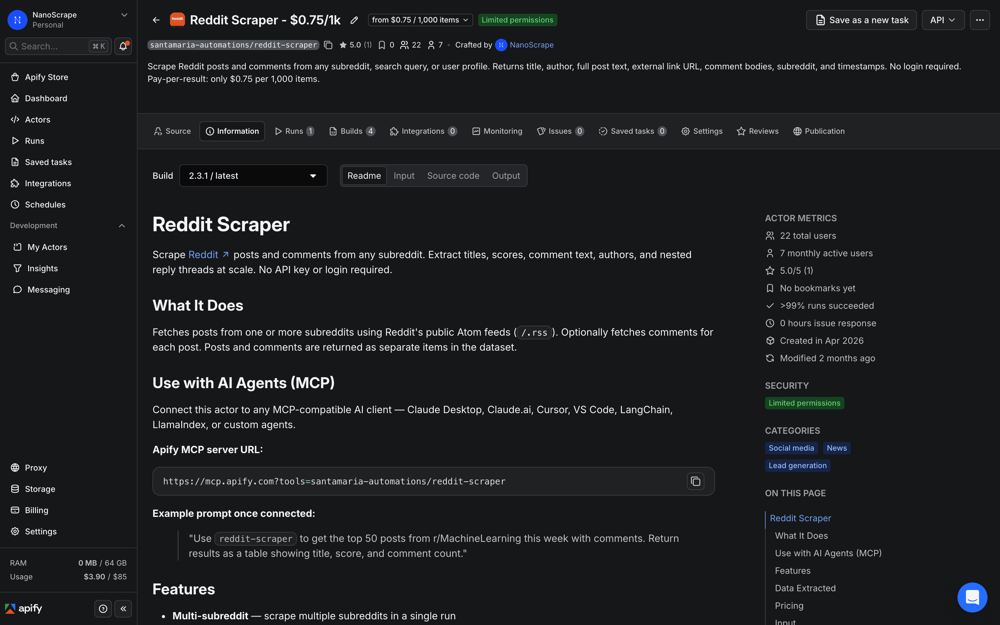
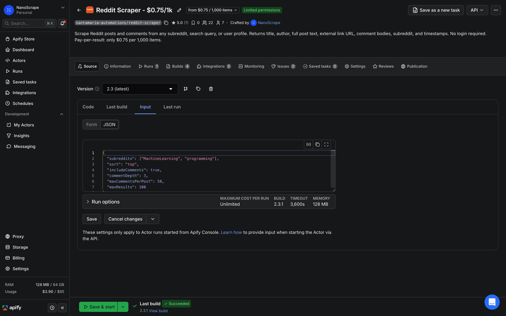
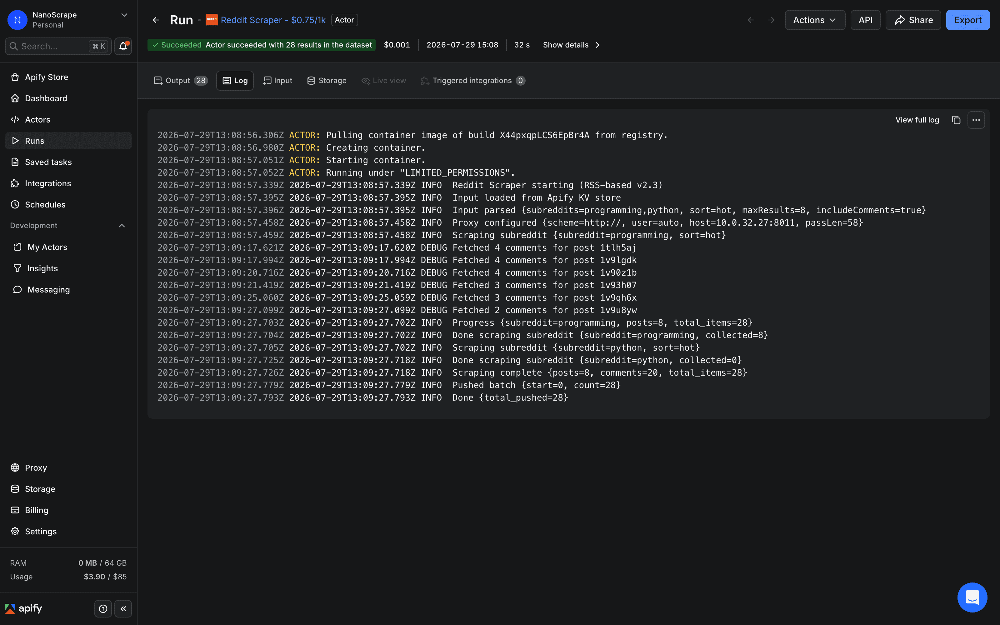
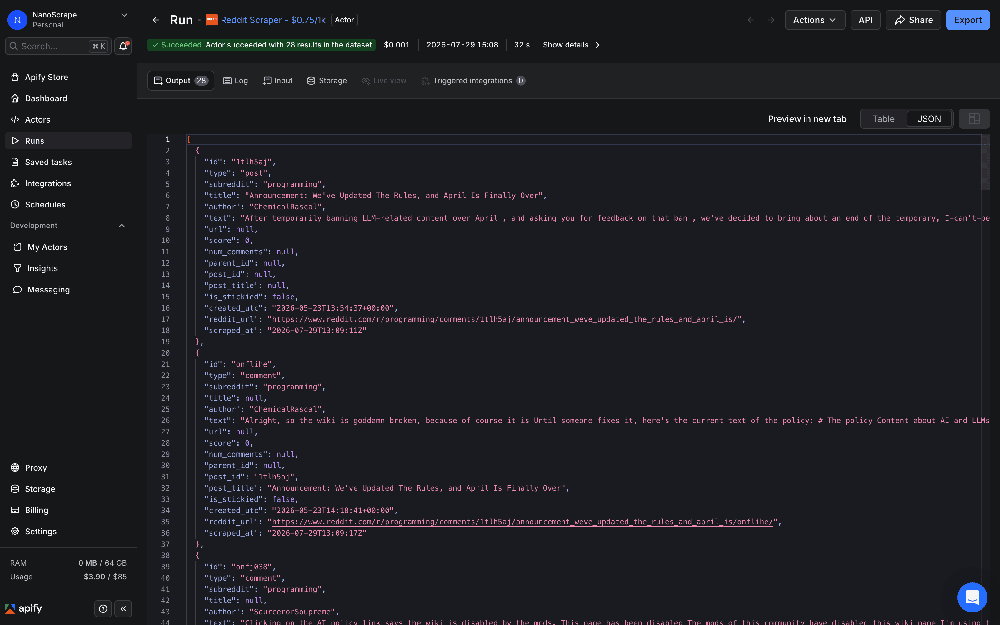
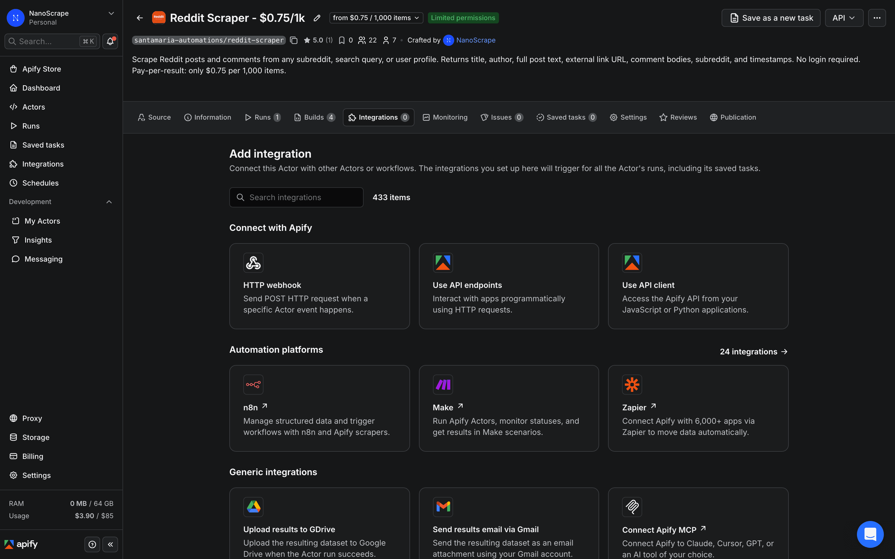

How to Scrape Reddit: Posts, Comments, and User Profiles Without an API Key
Collect posts and full comment threads from any public subreddit, search query, or user profile. No Reddit account, no API key, no OAuth setup. Sort by hot, new, top, or rising. Configure comment depth and volume. About $0.75 per 1,000 posts or comments.

In this tutorial
What data you get
Each run returns a flat list of items. Posts and comments are separate items in the same dataset, distinguished by a type field. When comments are enabled, the actor outputs each post followed by its comments before moving to the next post.
Post fields
{
"id": "abc123",
"type": "post",
"subreddit": "programming",
"title": "Show HN: I built a Go-based Reddit scraper",
"author": "john_doe",
"text": "Full text of a self post...",
"url": "https://github.com/example/repo",
"score": 0,
"num_comments": null,
"is_stickied": false,
"created_utc": "2026-04-25T10:00:00Z",
"reddit_url": "https://www.reddit.com/r/programming/comments/...",
"scraped_at": "2026-04-25T10:30:00Z"
}Comment fields
{
"id": "xyz789",
"type": "comment",
"subreddit": "programming",
"author": "helpful_user",
"text": "Great project! Have you considered...",
"score": 0,
"parent_id": null,
"post_id": "abc123",
"post_title": "Show HN: I built a Go-based Reddit scraper",
"is_stickied": false,
"created_utc": "2026-04-25T11:15:00Z",
"reddit_url": "https://www.reddit.com/r/programming/comments/.../xyz789/",
"scraped_at": "2026-04-25T11:30:00Z"
}score and num_comments: Reddit removed access to its JSON endpoints in June 2026. The actor uses Reddit's public Atom feeds (/.rss), which is the only public surface that still works without a registered API app. Atom feeds do not expose vote counts or comment counts, so score is always 0 and num_comments is always null. All other fields (title, author, body text, URLs, timestamps) are identical to what you see on the site.Prerequisites
- A free Apify account. Sign up at the actor page. The free tier includes $5 of usage credit every month, which covers about 6,600 Reddit items from this actor.
- A list of subreddit names (without the
r/prefix), a search query, or a list of Reddit usernames. No Reddit account or API credentials are required.
Open the actor and sign up
- Go to the NanoScrape Reddit Scraper on Apify.
- Click Try for free. Sign up with Google or email. It takes about a minute.
- Once signed in, the actor opens in Apify Console with the Input tab active.

Configure subreddits and options
In the Input tab, click JSON editor at the top right of the panel. Paste a configuration object. The simplest run just needs subreddits:
{
"subreddits": ["programming", "python", "golang"],
"sort": "hot",
"maxResults": 200
}The full list of input fields:
subreddits(string[]): subreddit names without ther/prefix. Default:["programming"].searchQuery(string): search Reddit-wide instead of targeting specific subreddits. When set,subredditsis ignored. Sort options in search mode:relevance,top,new,hot.usernames(string[]): scrape all posts and comments from these users (without theu/prefix). Mutually exclusive withsubredditsandsearchQuery.sort(string): how to order results. One ofhot,new,top,rising. Default:hot.includeComments(boolean): fetch comments for each post. Default:false. Enabling this multiplies the number of items (and cost) by roughly the average comment count per post.commentDepth(integer, 1-5): how many reply levels to collect. 1 = top-level only, 2 = replies to top-level, up to 5. Default:3.maxCommentsPerPost(integer): max comments per post. Set to0for unlimited. Default:100.maxResults(integer): max posts to return across all subreddits. Set to0for unlimited. Default:100.proxyConfiguration(object): Apify proxy settings. Leave at the default (useApifyProxy: true) for most runs.

Run the actor
Click Start at the top right. The actor starts immediately. In the live log you will see each subreddit being processed and a running count of items collected. A run collecting 200 posts without comments typically completes in 15 to 30 seconds. With comments at depth 3 and 100 posts, expect one to three minutes.

When the run finishes, the status changes to Succeeded. Click Results to preview the dataset. Filter the table by the type column to see only posts or only comments.

Export your results
From the Results tab, click Export to download the dataset as JSON, CSV, or Excel. For live destinations, use the Integrations panel:
- Google Sheets: click Integrations below the run log, choose Google Sheets, and authorize once. Every future run on this actor will append rows to your chosen sheet.
- Airtable / Notion / Postgres: same flow, choose the matching integration.
- Webhook: open Integrations › Add Integration › Webhook and paste your endpoint URL. Apify posts the full dataset payload when the run finishes.
- n8n / Make / Zapier: call the actor via an HTTP request and retrieve results from the dataset endpoint. See the n8n section below for a step-by-step walkthrough.

type column. Set it to post to get a clean list of posts with no comment noise, or to comment to read the discussion threads.Automate recurring runs with n8n
To run the Reddit Scraper on a schedule (for example, pulling new posts from a set of subreddits every morning), connect it to n8n using the verified Apify n8n node.
- Open n8n and create a new workflow.
- Add a Schedule Trigger node. Set the interval to once a day, once a week, or a cron expression.
- Add an Apify node. Set Operation to Run an Actor and get dataset. Set Actor ID to
santamaria-automations/reddit-scraper. - In the Input JSON field, paste your configuration. You can reference earlier nodes to pass subreddit names dynamically.
- Add a Google Sheets node (or any other destination) to write the results.
- Save and activate the workflow.
{
"subreddits": ["SaaS", "startups", "Entrepreneur"],
"sort": "new",
"maxResults": 100,
"includeComments": false
}This workflow fires every morning, collects the 100 newest posts from three business subreddits, and appends the rows to a Google Sheet. At $0.075 per run (100 posts x $0.00075 + $0.005 startup), a daily run costs about $2.30 per month.
@apify/n8n-nodes-apify.Common use cases
Market research and sentiment analysis
Collect posts and comments from subreddits where your target customers spend time. Run the text through a sentiment classifier or LLM to identify recurring pain points, feature requests, and competitor mentions. The text field on both posts and comments contains the full body text, ready for analysis.
Brand and competitor monitoring
Use searchQuery mode to search for your brand name or a competitor's product across all of Reddit. Schedule the run daily using n8n so you get a fresh feed of mentions every morning, without checking Reddit manually.
{
"searchQuery": "nanoscrape OR apify scraper",
"sort": "new",
"maxResults": 50
}Content research and topic discovery
Scrape the hot or top posts from subreddits in your niche. The titles and scores give you a direct signal of what the community finds valuable right now. Combine with comment threads to understand the conversation depth behind each topic.
Lead generation from niche subreddits
Subreddits like r/forhire, r/slavelabour, r/hiring, or niche professional communities often have posts from people actively looking for services. Scrape new posts daily, filter by keywords in the title, and route matches to a CRM or Slack notification.
Training data for LLMs and classifiers
Reddit is one of the richest sources of conversational text on the internet. For domain-specific fine-tuning or RLHF datasets, collect posts and comments from relevant subreddits. The post_id and parent_id fields on comment items let you reconstruct conversation pairs for supervised training.
What it costs
- Actor start: $0.005 per run (one-time, covers session startup).
- Per item: $0.00075 per post or comment returned. That works out to $0.75 per 1,000 items.
- No monthly fees. No minimum spend.
100 posts (no comments) = $0.08 ($0.005 + $0.075) 100 posts + 500 comments = $0.46 ($0.005 + $0.45) 1,000 posts + 5,000 comments = $4.51 ($0.005 + $4.50) Daily new-posts run, 100 posts/day ~ $2.30/month
The Apify free tier includes $5 of usage credit each month. That covers about 6,600 Reddit items per month (posts or comments) at no charge. A typical market-research run of 200 posts with 10 comments each costs about $1.55.
FAQ
Do I need a Reddit account or API key?
No. The actor uses Reddit's public Atom feeds, which are accessible without authentication. No API key, no OAuth app, no Reddit account is required.
Why is the score field always 0?
Reddit removed access to its /.json endpoints in June 2026. The actor now uses Reddit's public Atom (/.rss) feeds, which are the only remaining way to scrape Reddit without a registered API app. Atom feeds do not expose vote counts, so score is always returned as 0. If you need scores, use Reddit's official OAuth API.
Can I scrape private subreddits?
No. The actor can only access subreddits and posts that are publicly visible without logging in.
How are comments structured?
Comments are separate items in the dataset with type: "comment". Each comment has a post_id and post_title that link it to the parent post. Because Atom feeds do not expose the parent-comment relationship, parent_id is always null and comments come back as a flat list rather than a tree.
Can I search across all of Reddit, not just specific subreddits?
Yes. Use the searchQuery field instead of subreddits. Set sort to relevance, top, new, or hot. The actor will run a Reddit-wide search and return matching posts.
Can I scrape a specific user's posts and comments?
Yes. Use the usernames field with a list of Reddit usernames (without the u/ prefix). The actor scrapes that user's public post and comment history. Note that Reddit applies stricter rate limiting on user profile pages, so some users may return fewer results.
Is scraping Reddit legal?
The actor only accesses data that is publicly visible on Reddit without logging in. The hiQ Labs v. LinkedIn ruling in the US established that scraping public data is not a violation of the Computer Fraud and Abuse Act. Reddit's terms of service restrict automated access, so you take on responsibility for your own use case. Consult a lawyer for specific compliance questions.
Related resources
- Reddit Scraper on Apify: full actor documentation, input parameters, output field reference.
- Instagram Scraper on Apify: extract public Instagram profile stats and recent posts in a similar pay-per-result model.
- Google Maps Scraper on Apify: collect local business data at scale. Pairs well with Reddit research for lead validation.
- All NanoScrape tutorials: step-by-step guides for every actor in the NanoScrape catalog.